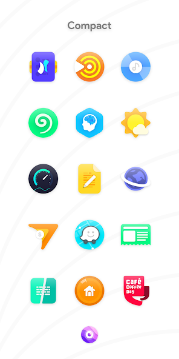

Nebula 图标包快问快答：8845 枚手绘图标到底值不值得装
整理一篇关于 Nebula 安卓图标包的快问快答——从要不要启动器、怎么套用到权限安全，替你把该问的都问了。
整理一篇关于 Nebula 的快问快答。如果你刷到过别人的安卓桌面截图、被那一堆彩色手绘图标种草，又不知道它到底怎么玩、踩不踩坑，这篇就是给你准备的。
它是什么？跟普通换图标有啥不一样？
Nebula官网介绍的这款安卓图标包，主打手绘风格的彩色图标——包内有 8845 枚以上的图标素材，覆盖市面上绝大多数主流应用。跟系统自带的「主题」或普通图标包比，它的特别之处在于风格统一性强，每枚图标都按同一套配色语言和笔触绘制，装完之后桌面看起来不是「换了一堆图标」，而是「整个桌面被重新画了一遍」。
但它本身不是桌面。装上之后你会看到一个叫 Blueprint 的管理面板，可以浏览图标、下载壁纸、提交未覆盖应用的图标申请——面板很好用，但桌面不会自己变。想看到换装效果，还需要一个第三方启动器当「中间人」。
谁需要它？
如果你满足以下任意一条，Nebula 大概率值得试：你觉得手机默认图标看腻了、想让桌面有辨识度；你已经在用第三方启动器（Nova、Niagara、Smart Launcher 之类）；你喜欢手绘风、不想用那种扁平极简到没个性的图标。
反过来，如果你用的是系统自带桌面、不想折腾启动器，那这款图标包对你来说就是个只能看不能用的相册——装了也白装。
一定要装启动器吗？装启动器会动我手机吗？
一定要装。这是所有图标包共有的门槛，不是 Nebula 故意卡你。原因很简单：安卓桌面的绘制权在启动器手里，系统自带桌面不对外开放换图标的接口，所以图标包的素材铺不上去。第三方启动器才提供了「图标主题」入口，允许把包内素材替换到每个应用上。
装启动器完全不会动你的手机数据。启动器就是个普通应用，装上、设为默认桌面即可；随时可以在系统设置里改回原桌面，桌面上的图标排列、应用数据、照片联系人一项都不会丢。你可以把它理解成换了一层「桌面皮肤」，想换就换、想撤就撤。启动器准备好后，Nebula本体去下载就行。
套用到启动器上要几步？
分两种情况。如果你的启动器在 Blueprint 面板的直连名单里——面板的应用页里直接点启动器名字就能完成套用，不用手动找入口。如果面板没检测到，就手动来：桌面空白处长按进设置，找到「屏幕外观」或类似分区，点开「Icon pack」（图标包）一项，在列表里选 Nebula，桌面会自动重绘，几十秒内换装完成。各种启动器的详细适配步骤，Nebula文档里都有对应条目。
套完之后会发现只有部分图标变了——这很正常，剩下的是图标库还没覆盖到的应用，不是套用失败。
它自带的 20 张壁纸要另外下载吗？
不要。壁纸不走网盘、不藏在系统图库里，全部通过 Blueprint 面板的「壁纸 / Wallpapers」页分发。打开面板切到壁纸页，首次进入需要联网加载缩略图，点开任意一张进入全屏预览——预览器支持缩放看细节，觉得好看就点下载存本地再点应用，或者下好之后去系统相册里手动设。
壁纸按需从云端下载，装机量很小；换机重装之后需要重新下载，这个设计是故意的，不是 bug。面板本身可以离线使用，只有壁纸和图标申请功能需要联网。

权限安全吗？会不会偷偷拿我数据？
非常干净。图标包是安卓个性化品类里权限最少的应用类型，Nebula 的核心功能——浏览图标、套用到启动器、切换面板主题——一项敏感权限都不要：不需要定位、通讯录、短信、相机。
唯一需要注意的是提交图标申请时，面板要读你的应用列表——不然它没法列出你装了哪些应用、哪些还没被主题化。应用列表属于普通权限，不涉及使用记录。再就是壁纸下载和申请提交走网络，联网权限不可少，但这是刚需。
装完可以花 30 秒自查一下：系统设置 → 应用 → Nebula → 权限，核对已授权项，多余权限（定位、通讯录、电话）一项都不该出现。顺便确认包名是 com.stark.nebula，排除仿冒应用。
有什么坑？
最常见的坑就是「打开 Nebula 没效果，以为坏了」——这是没装启动器或没设为默认桌面。第二个坑是「只有部分图标变了」——那是图标库没覆盖的应用，不是套用失败。第三个坑是下载壁纸时列表为空，先查网络，再清面板缓存，最后确认版本是不是 7.5.4 以上。
还有一个小细节：不同启动器对图标遮罩的处理不一样。比如 Action Launcher 支持给所有图标套统一形状，如果你选圆形遮罩，Nebula 里少数方形底的特殊图标也会被规整成圆形——整齐优先就开，个性优先就关，按你喜好来。
有没有必要长期装？
取决于你对桌面个性化的追求程度。如果觉得默认图标看久了还行，那 Nebula 就是一次性新鲜劲；但如果你已经习惯了用第三方启动器、喜欢定期调桌面布局和配色，那它会成为你桌面工具箱里的常驻品——8845 枚图标覆盖够广，自带的壁纸风格也统一，Blueprint 面板还能方便地提交未覆盖应用的图标申请，长期用下来桌面辨识度一直在线。
最后一句：你刚好在找一款风格统一、权限干净的手绘风安卓图标包，同时愿意花五分钟装个启动器——那就装，不会后悔。顺带一提，完整的图标覆盖清单和面板功能说明在GitHub可以找到，国内访问慢的话去Gitee或GitCode也行，三份是镜像关系。